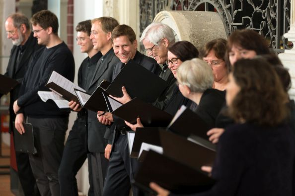

Verleihung der Geschwister-Mendelssohn-Medaillen des Chorverbands Berlin am 22. Juni 2017 in der Mendelssohn-Remise Berlin-Mitte
Mitsingen in der Cappella Vocale Berlin

Foto: Michael Setzpfandt in der Nikolaikirche Berlin-Mitte
| Sind Sie auf der Suche nach einen Chor mit hohem Anspruch und außergewöhnlichen Konzerten? - Die Cappella Vocale Berlin der Ev. Kirchengemeinde zu Staaken bietet hochqualifizierte Chorarbeit unter professioneller Leitung in einem kleinen Ensemble mit stimmlich geschulten, musikalisch erfahrenen Sängerinnen und Sängern aus ganz Berlin. Die Probenarbeit für die etwa acht Konzerte und Auftritte im Jahr findet nach Absprache zwei- bis dreimal monatlich an Dienstagen oder Freitagen sowie an Wochenenden in der Ev. Zuversichtskirche in Staaken oder an anderen Probenorten in ganz Berlin statt. Häufiger Aufführungsort ist die älteste Kirche Berlins, die Nikolaikirche in Berlin-Mitte. Voraussetzung zur Teilnahme sind eine gut gebildete Stimme sowie Erfahrung im Ensemble- und Vom-Blatt-Singen. Sie sollten zur Mitarbeit auf musikalisch hohem Niveau ohne finanzielle Erwartungen bereit sein. Vorsingtermine können gerne mit Carsten Albrecht vereinbart werden. |
Verleihung der Geschwister-Mendelssohn-Medaillen des Chorverbands Berlin am 22. Juni 2017 in der Mendelssohn-Remise Berlin-Mitte